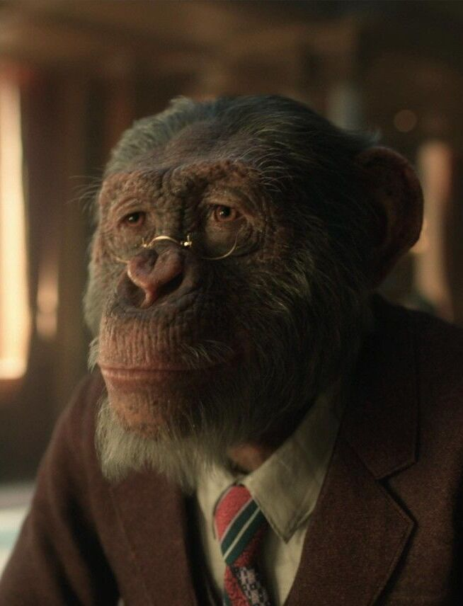
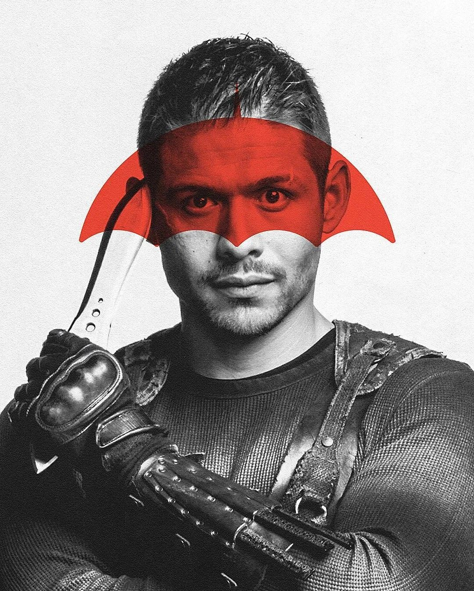
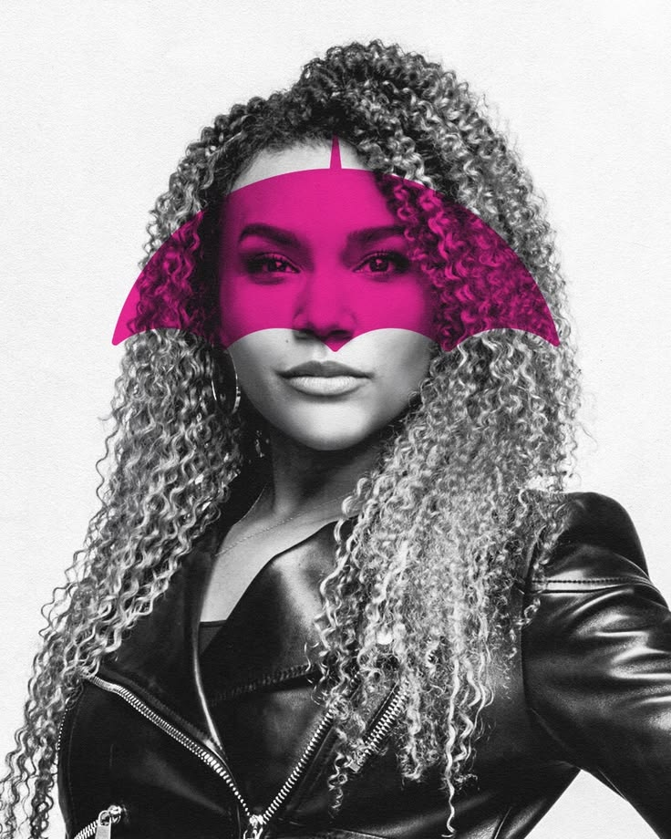
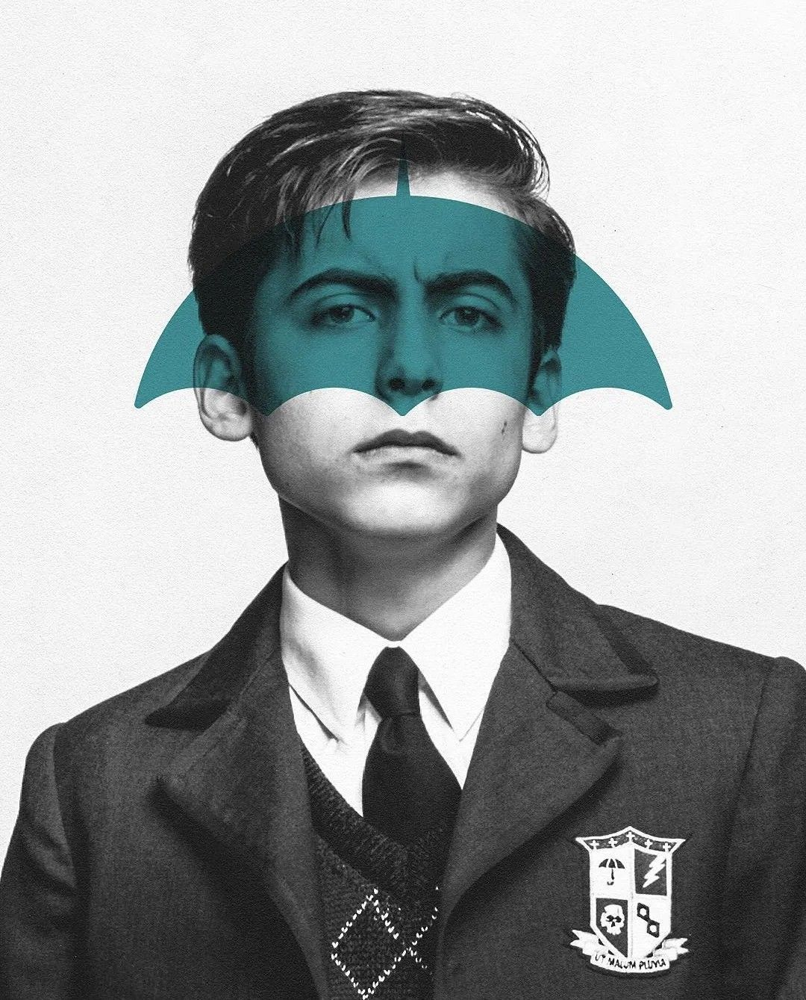
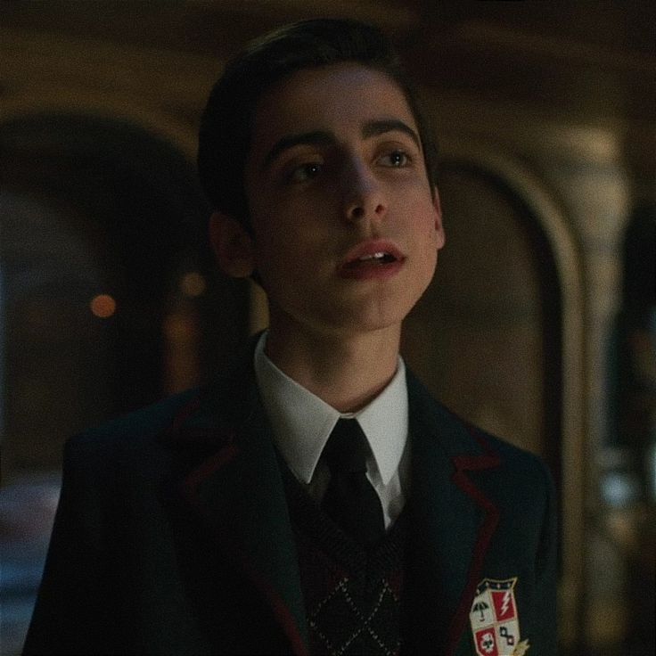
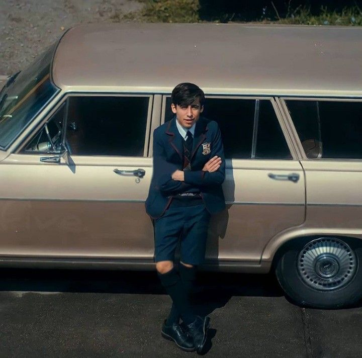
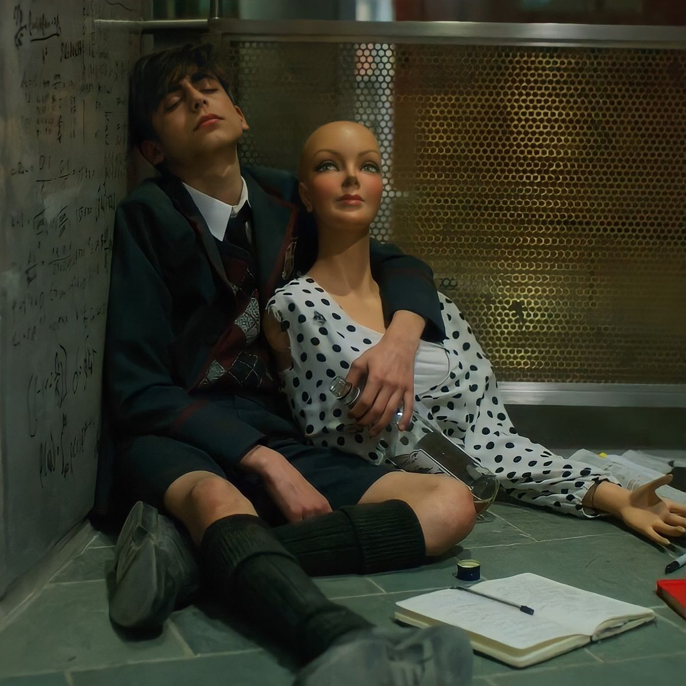

НОМЕР ПЯТЬ
ПЯТЫЙ ХАРГРИВЗ
«Знаешь, как называют героя, который действует один и никого не слушает? Злодеем.»

О персонаже
Путешественник во времени
Пятый Харгривз — один из приёмных детей с необычными способностями, усыновлённых сэром Реджинальдом Харгривзом. Он известен своим острым умом, сарказмом, хладнокровием и привычкой полагаться прежде всего на себя.
После неудачного прыжка во времени Пятый оказался в постапокалиптическом будущем и был вынужден провести там десятилетия. Вернувшись, он ставит перед собой одну цель — не допустить конца света и спасти свою семью.
Характер
В детстве Пятый казался более холодным и бесчувственным по сравнению с братьями и сёстрами.
После 45 лет в постапокалиптическом будущем его психика серьёзно пострадала. Он стал более раздражительным, замкнутым, в нём появилась склонность к отчуждённости. При этом он не терял надежды и продолжал искать способ вернуться, чтобы предупредить семью.
Как наёмный убийца в рамках Временной комиссии он приобрёл садистские черты: в бою был безжалостен, угрожал врагам.
В общении он часто бывает резким, язвительным, может вести себя грубо и пренебрежительно.
Вместе с тем у него есть и сильные стороны: он находчив, обладает гениальным интеллектом и яростно предан своей миссии — спасти мир и уберечь семью.
Семья

Реджинальд Харгривз
приёмный отец

Грейс
приёмная мать

Пого
дворецкий

Лютер
номер один

Диего
номер два

Эллисон
номер три

Клаус
номер четыре

Пятый
номер пять

Бен
номер шесть

Ваня
номер семь
Галерея


